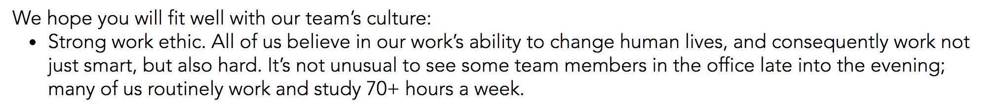

Most fortunately it happens, that since reason is incapable of dispelling these clouds, nature herself suffices to that purpose, and cures me of this philosophical melancholy and delirium, either by relaxing this bent of mind, or by some avocation, and lively impression of my senses, which obliterate all these chimeras. I dine, I play a game of backgammon, I converse, and am merry with my friends; and when after three or four hours’ amusement, I would return to these speculations, they appear so cold, and strained, and ridiculous, that I cannot find in my heart to enter into them any farther.
David Hume, A Treatise of Human Nature (1739) p269
Hume faced a divide in his life between philosophical ascetism and a social life. That sense of ascetism, a singular focus on work, is often mirrored in the worlds of tech and finance.

A lot of my friends went to investment banking/finance where the norm is 80 hours per week of work for kids straight out of college. This model ‘works’ for the banks for two reasons:
This model doesn’t work for tech companies:
I also think Hume’s point about being mentally healthy and avoiding sickness is pretty important, if you wanted a reason other than cold economic rationality to not work your employees into the ground. Or maybe just hold some backgammon games at the office.